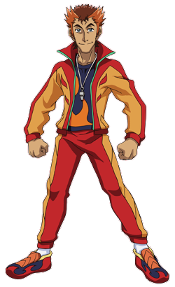
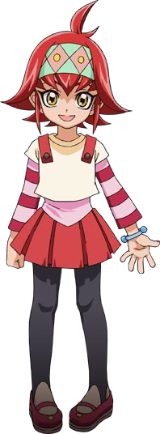
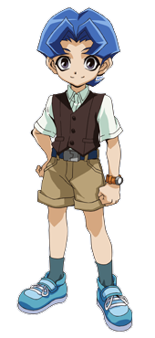
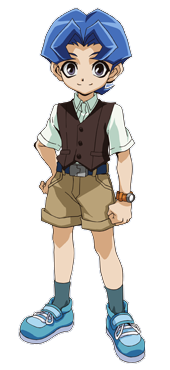
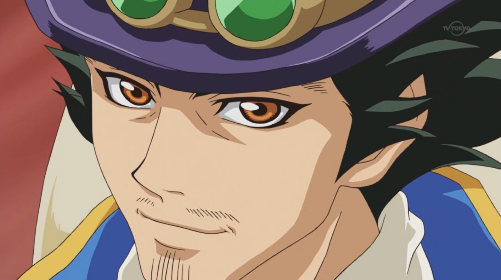
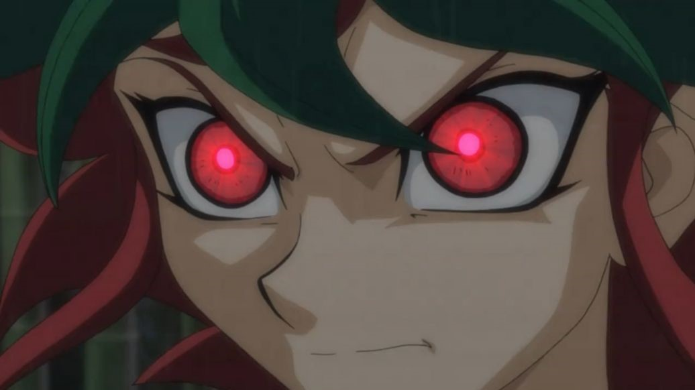
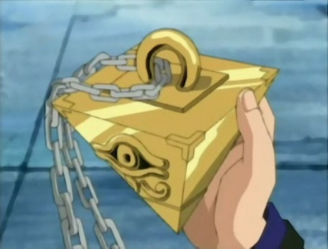
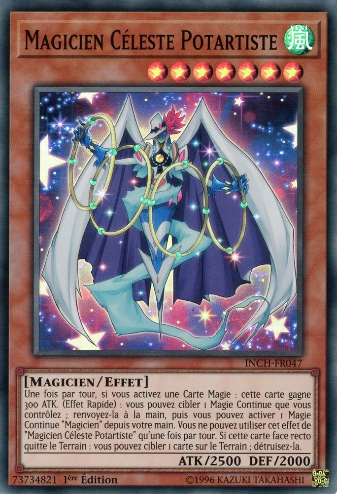
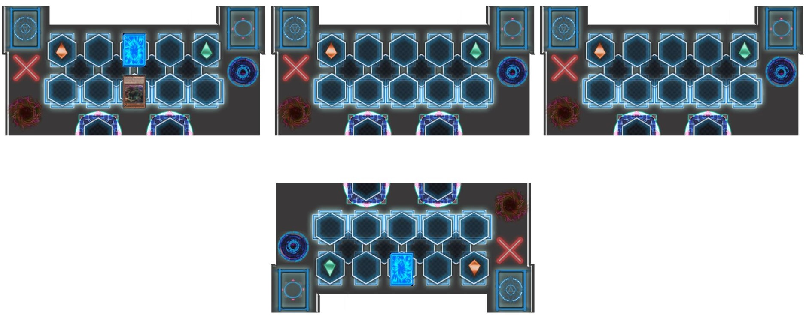
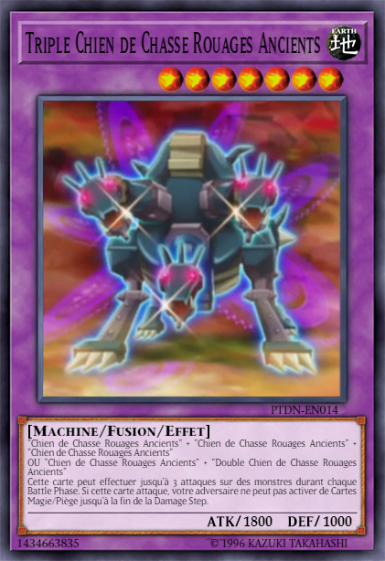

s'est plaint, tout en continuant à manger.
C'était un samedi matin ensoleillé et Yuya dégustait un petit-déjeuner composé d'œufs brouillés, de toasts de blé, de fruits frais et de lait.
s'est plaint, tout en continuant à manger.
C'était un samedi matin ensoleillé et Yuya dégustait un petit-déjeuner composé d'œufs brouillés, de toasts de blé, de fruits frais et de lait.
Yuya: Je vous ai dit les amis, je vais bien ! Le docteur a dit qu'il ne trouvait rien d'anormal ! Pas besoin de s'inquiéter autant !
Sakaki Yuya s'est plaint, tout en continuant à manger.
C'était un samedi matin ensoleillé et Yuya dégustait un petit-déjeuner composé d'œufs brouillés, de toasts de blé, de fruits frais et de lait.
Yuzu: Après ce qui s'est passé hier, nous avons le droit d'être inquiets !
Argumenta Yuzu Hiragi . Ce matin-là,
Gongenzaka Noboru
. Ce matin-là,
Gongenzaka Noboru ,
un grand gaillard portant un uniforme blanc et de grosses sandales,
,
un grand gaillard portant un uniforme blanc et de grosses sandales,
Shuzo Hiragi,
le père de Yuzu, et trois enfants plus petits étaient assis avec elle dans la maison de Yuya.

Il y avait une petite fille aux cheveux rouges nommée
Ayu Ayukawa,
un petit garçon potelé nommé Futoshi Harada ,
et un petit garçon aux cheveux bleus nommé Tatsuya Yamashiro.
Eux, ainsi que la mère de Yuya, une femme blonde nommée
Sakaki Yoko
,
et un petit garçon aux cheveux bleus nommé Tatsuya Yamashiro.
Eux, ainsi que la mère de Yuya, une femme blonde nommée
Sakaki Yoko fixaient Yuya avec une grande inquiétude.
fixaient Yuya avec une grande inquiétude.
Yoko: Je suis d'accord avec Yuzu. D'après ce qu'on m'a dit, nous ne pouvons prendre aucun risque. D'où ton repas très sain pour le coeur.
Yoko a grondé. Après la disparition de son mari, elle ne voulait pas que quelque chose arrive à son précieux fils.
Yoko: Après avoir parlé avec Shuzo, et il est d'accord avec moi sur ce point, j'ai décidé que tu devrais arrêter les duels pendant un certain temps. Reste tranquille pendant au moins une semaine.
Yuya cracha du lait de sa bouche à cette nouvelle, aspergeant accidentellement le visage de Shuzo, le type aux cheveux orange hérissés de pointes.
Yuya: Une semaine !? Maman, tu te moques de moi !? Je te l'ai dis, tout va bien chez moi !
Yuya essaya de protester.
Shuzo: Yuya, nous étions tous là, moi y compris. Sérieusement, tu as de la chance qu'on n'ait pas eu à t'emmener aux urgences ! Si notre nouvel ami n'avait pas été là, qui sait ce qui aurait pu se passer !
Rétorqua Shuzo.
Ils se sont tous tournés vers le nouvel occupant de la maison Sakaki. Un garçon, de 16 ans environ, qui portait une étrange pyramide autour du cou, n'aimait pas vraiment être soudainement sous les projecteurs. Il a souri et a essayé de ne pas paraître embarrassé.
???: Ce n'était rien, vraiment. Je suis juste heureux que Yuya-kun aille bien.
Yoko s'est dirigée vers le garçon et l'a serré très fort dans ses bras, le faisant presque suffoquer.
Yoko: Rien ? Tu as sauvé la vie de mon fils ! Tu es le bienvenu chez moi quand tu veux... hum, c'est quoi ton nom déjà ?
Demanda Yoko.
Yugi: C'est Yugi, madame.
Muto Yugi .
.
Yuya: Oui. Merci de m'avoir aidé tout à l'heure, Yugi.
Yuya a dit après avoir avalé une petite bouchée de pain grillé.
Yugi: Tu es plus que bienvenu, Yuya-kun.
Après ça, Yugi a repensé à "l'incident" avec Yuya dont tout le monde parlait...
Début du Flashback
Sur le terrain de duel de la You Show Duel School ,
Yuya venait de gagner un duel contre un nouveau duelliste qui voulait devenir son "apprenti". Il s'agissait d'un jeune garçon aux cheveux bleu clair nommé
Sora Shiunin
,
Yuya venait de gagner un duel contre un nouveau duelliste qui voulait devenir son "apprenti". Il s'agissait d'un jeune garçon aux cheveux bleu clair nommé
Sora Shiunin .
Il semblait être un utilisateur de fusion très doué. Alors que tout le monde sortait pour les voir, Yugi se tenait debout et regardait tout cela depuis l'entrée de l'aire de duel.
.
Il semblait être un utilisateur de fusion très doué. Alors que tout le monde sortait pour les voir, Yugi se tenait debout et regardait tout cela depuis l'entrée de l'aire de duel.
Yuya: Maintenant que j'ai gagné le duel, tu peux arrêter de me suivre...
A peine Yuya eu le temps de dire sa phrase que Sora se mettait soudainement à rire.
Sora: Trop génial ! C'était vraiment génial de t'affronter, Yuya !
Yuya: Ah bon ? Et puis, pourquoi tu m'appelles par mon prénom ?
Sora: Et bien, je ne peux pas devenir ton apprenti, c'est bien ça ? Dans ce cas, je serais ton ami !
Sora le disait joyeusement. Cela déconcerta Yuya.
Yuya: Pardon ?
Sora continua à sourire.
Sora: Ce duel était très amusant ! J'adorerais refaire un duel avec toi en tant qu'ami !
Yuya, lui, avait l'air ennuyé. Après un bref échange avec Shuzo concernant l'obtention des papiers pour que Sora devienne officiellement un nouvel élève de l'école, Yuya commença à poser quelques questions à Sora.
Yuya: Mais dis-moi Sora. Si tu n'as jamais été un élève de la LDS, où as-tu appris l'Invocation Fusion ?
De sa cachette, Yugi pouvait voir que Sora ne voulait en aucun cas, dire la vérité à son nouvel "ami".
Sora: Awww, ne t'en fais pas, c'est juste un détail !
Yugi: Eh bien, ce n'est certainement pas vrai.
Yugi se disait à lui-même.
Sora: Maintenant, nous sommes amis, toi et moi, Yuya !
Yuya: Hein ? Qu'est-ce que tu me chantes là ? Et puis, je ne t'ai pas encore reconnu comme mon...
Gah !
A ce moment là, quelque chose d'horrible s'est produit. Yuya a attrapé sa poitrine, là où se trouvait son cœur, et a commencé à crier en tombant à genoux. Ses cris ont complètement effrayé Sora, qui n'était pas préparé à une telle chose. Tout le monde a instantanément couru vers Yuya, qui continuait à crier en tenant sa main sur son cœur. Yugi lui-même a été très choqué par cela aussi. Il a alors remarqué que juste avant de fermer les yeux à cause de la douleur, les yeux de Yuya ont commencé à briller d'un leger rouge fonce.
Yugi: Mou Hitori no Boku ! Qu'est-ce qui ne va pas avec Yuya !?
(trad: Mou Hitori no Boku = Mon Autre moi)
???: Rien de bon ! Yugi, je sens quelque chose à l'intérieur de Yuya, quelque chose de sombre ! Cette énergie lui fait du mal ! Ca ne peut être qu'une chose... !
Disait Atem, un ancien esprit qui résidait dans le Puzzle du Millenium que Yugi portait.
Yugi: Tu as raison ! C'est forcément lui ! Y a-t-il quelque chose que nous pouvons faire pour aider Yuya !?
Yugi demanda en panique.
Atem (Yami Yugi): Je serais peut-être capable d'apaiser ses ténèbres, mais, pour cela, j'ai besoin de toi pour m'aider à me connecter à Yuya !
Atem donna ses instructions. Pendant que ces deux là conversaient entre eux, le terrible cri de Yuya continuait. Cela effrayait tout le monde autour.
Yuya: Gaaaaaaaaahhhhhhhhhh !!!
Yuzu: Yuya ! Qu'est-ce qui ne va pas !? Qu'est-ce qu'il y a !? Parle-nous, Yuya !
Yuzu a supplié, mais la réponse de Yuya était de plus en plus de cri.
Yuzu: Papa ! Est-ce qu'on peut faire quelque chose ?!
Ayu: Mr. Hiragi, faites quelque chose !
Ayu a crié, détestant voir ce qui se passait. À ce moment-là, Yuya est retombé sur le sol, et sa douleur s'est aggravée. Il était allongé là, hurlant comme s'il était en train de mourir. Yuzu s'est mise à pleurer, souhaitant pouvoir faire quelque chose.
Shuzo: Appelle l'hôpital ! Nous devons... !
Shuzo a commencé, quand de l'aide est arrivée inopinément.
Yugi: Je peux l'aider !
Déclara Yugi en courant vers Yuya qui criait. Le groupe sursauta à son approche, aucun d'entre eux ne l'ayant jamais vu auparavant.
Sora: Hein ? Qui es-tu !?
Demanda Sora, surpris. Yugi l'a ignoré et s'est agenouillé à côté de Yuya.
Yugi: Je peux aider Yuya ! Tout le monde, s'il vous plaît, restez en arrière ! Je peux le faire !
Ordonna Yugi. Ils ont tous hésité, mais ont tout de même reculé un peu.
Yuzu: Et qu'est ce que tu comptes faire ?
Demanda Yuzu, craignant pour la vie de son ami le plus proche. Yugi plaça une main sur la poitrine de Yuya, tout en tenant son puzzle dans l'autre main. Il ne quitta pas Yuya des yeux pendant qu'il répondait.
Yugi: Fais-moi confiance !
C'est tout ce qu'il a dit en fermant les yeux. Yuzu, son père et les autres ont alors regardé l'étranger essayer d'aider leur ami. Ce qu'ils ne pouvaient pas voir, c'est que l'œil du puzzle du millénium brillait, et que cette lueur se déplaçait faiblement dans la main de Yugi, touchant Yuya et couvrant ensuite le garçon lui-même. En quelques secondes, les cris de Yuya se sont finalement arrêtés avant qu'il ne s'évanouisse de douleur.
Tout le monde est resté silencieux, attendant d'entendre le résultat des efforts de l'étranger. Après un moment calme mais intense, Yugi a levé les yeux vers eux et a souri d'un signe de tête. Il s'est ensuite retiré tandis que les proches de Yuya couraient vers lui. Shuzo a immédiatement vérifié l'état du garçon. Il a soupiré avec soulagement.
Shuzo: Yuya est inconscient. Son pouls a ralenti, mais je pense qu'il va s'en sortir. On devrait quand même l'emmener voir un médecin, juste pour être sûrs. Yuzu, appelle Yoko. Je vais appeler l'hôpital.
Yuzu: Bien !
Yuzu a répondu en composant le numéro de la mère de Yuya. Yugi s'était mis en retrait pour laisser de l'espace au groupe. Une fois les appels passés, ils se sont tous tournés vers Yugi avec stupéfaction.
Yuzu: Qu'est-ce que tu as fait ? Comment as-tu aidé Yuya ?
Demanda Yuzu. Yugi avait déjà une réponse toute prête.
Yugi: C'est une vieille méthode de guérison transmise dans ma famille depuis des générations. Je n'ai jamais eu l'occasion de l'utiliser.
Il espérait être assez convaincant. Avant qu'il ne le sache, Yuzu a couru vers Yugi et l'a serré dans ses bras.
Yuzu: Merci ! Merci beaucoup ! J'ai presque commencé à penser que...
Yuzu n'a pas voulu terminer ce qu'elle pensait. Yugi a rougi un peu lorsque Yuzu l'a relâché.
Yugi: Je suis soulagé d'avoir été là pour aider.
Sora: Qui es-tu, mystérieux guérisseur ?
Demanda à nouveau Sora.
Tatsuya: Oui ! Quel est votre nom, Monsieur ?
Tastuya demanda.
Shuzo: S'il te plaît, dis-le nous, jeune homme.
Shuzo insista. Yugi sourit en se présentant.
Yugi: Mon nom est... Muto Yugi.
Fin du Flashback
Après l'incident, Yuya a été emmené à l'hôpital pour être examiné. Au grand étonnement de tous, le médecin n'a pas trouvé le moindre problème cardiaque chez Yuya. Il a dit que le garçon semblait en aussi bonne santé qu'il pouvait l'être, même si tout le monde savait que quelque chose avait causé cette crise douloureuse. Et bien sûr, personne n'a cru que Yuya avait prétendu être malade. Ce n'était pas quelque chose qu'il aurait fait. Malgré tout, le médecin a laissé Yuya sortir plus tard dans l'après-midi et a simplement conseillé à sa mère de le surveiller de près et de s'assurer qu'il ne faisait rien de trop fatigant. Yugi était heureux que Yuya aille bien, au moins pour le moment. Alors que Yuya continuait à se disputer avec tout le monde au sujet de son état, Yugi conversait avec son partenaire invisible.
Yugi: Merci Atem. Tu es la vraie raison pour laquelle Yuya va bien maintenant.
Yugi disait, mais son ami le rétorqua.
Atem (Yami Yugi): Non Aibou (trad: Aibou = Partenaire), c'était un travail d'équipe. Nous avons tous deux aidé Yuya. Je ne vais pas rester là et m'en attribuer tout le mérite.
D'ailleurs, je suis beaucoup plus préoccupé par ce qui a causé la douleur de Yuya en premier lieu.
Atem se demandait. Yugi, lui, compris.
Yugi: C'est forcément
Zarc . Il devait surement attaquer Yuya de l'intérieur, mais pourquoi ? Yuya-kun n'a pas fusionné avec l'un de ses homologues des autres dimensions.
. Il devait surement attaquer Yuya de l'intérieur, mais pourquoi ? Yuya-kun n'a pas fusionné avec l'un de ses homologues des autres dimensions.
Yugi déclara.
Atem (Yami Yugi): Je ne sais pas. Nous devons en discuter avec les autres lorsque nous les rencontrerons. Peut-être que quelque chose est arrivé lors d'une de
leurs missions, qui a peut-être déclenché cet incident. N'oublie pas Yugi, ce que Zarc fait à l'un de ses fragments affectera sûrement les autres.
L'esprit du pharaon je disait avec certitude.
Yugi: Je suis d'accord. J'espère juste que ça ne se reproduira pas.
Atem (Yami Yugi): En attendant, nous devons quand même nous concentrer sur notre propre mission.
Fit remarquer Atem.
Yugi: Oui. Jusqu'à présent, Academia n'a pas encore essayé de capturer Yuzu. Mais j'ai le sentiment qu'ils ne vont pas attendre beaucoup plus longtemps que ça. Surtout
si les autres ont effectivement réussi leurs missions.
Yugi a supposé. Atem acquiesça.
Atem (Yami Yugi): Cela pourrait arriver n'importe quand, même maintenant. La récente disparition de Sora pourrait être le signe qu'ils vont enfin faire leur tentative.
Plus tard, juste avant que Yuya ne soit emmené à l'hôpital, Sora a soudainement dit qu'il devait aller aux toilettes pour se laver de la sueur qu'il avait sur lui pour s'être inquiété de la santé de son nouvel ami.
Yugi a remarqué que juste avant de dire cela à tout le monde, Sora a jeté un coup d'œil rapide à son disque de duel et a été brièvement surpris avant de prendre un air innocent. Alors que les autres ne regardaient pas, Yugi a secrètement suivi Sora. Il a attendu que Sora soit entré et ait fermé la porte avant de s'en approcher. Aussi silencieusement qu'il le pouvait, il a ouvert la porte juste assez pour voir Sora appuyer sur un bouton de son Duel Disk et disparaître dans un tas de particules de lumières bleues. Il n'a pas semblé remarquer que Yugi l'observait juste avant son départ.
Personne d'autre ne savait où Sora était allé après ne pas être revenu des toilettes. Personne ne l'avait revu depuis. Tous, et surtout Yuzu, se sont sentis offensés que Sora abandonne Yuya comme ça, juste après avoir dit qu'il serait son ami. Yugi et Atem connaissaient tous les deux la vraie raison.
Atem (Yami Yugi): Sora a dû retourner à Academia. D'après sa réaction de tout à l'heure, il semble qu'on lui ait ordonné de rentrer le plus vite possible. Si c'est le cas...
Yugi: Alors
Leo a décidé de ne plus attendre pour mettre la main sur Yuzu.
a décidé de ne plus attendre pour mettre la main sur Yuzu.
Conclut Yugi.
Atem (Yami Yugi): Exactement. Nous devons nous préparer à tout plan que Léo a en tête. Quoi qu'il arrive, nous ne pouvons pas le laisser réussir.
Atem a déclaré, avec Yugi, qui était parfait d'accord avec lui.
Yugi: En effet ! Nous ne le laisserons certainement pas mettre la main sur Yuzu !
C'est alors que Yugi remarqua que quelqu'un essayait d'attirer son attention.
Futoshi: Allo ? La terre appelle Yugi-nichan ! Tu vas bien ?
Yugi mit fin à sa discussion avec Atem pour regarder autour de lui le groupe qui le fixait. Il vit que c'était Futoshi qui essayait d'attirer son attention.
Futoshi: Tu n'écoutais pas ? Je te demandais quelque chose.
Yugi gloussa de façon embarrassante.
Yugi: Oh, euh, désolé pour ça. J'ai juste été absent pendant un moment. Qu'est-ce que tu disais, Futoshi-kun ?
Le plus jeune enfant renifla.
Futoshi: Je te demandais ce que c'est que cette chose autour de ton cou.
Il le disait en désignant le puzzle de Yugi. Yugi regarda pour voir que tout le monde était tout aussi curieux à son sujet.
Yuya: Oui Yugi, qu'est-ce que c'est ?
Demanda Yuya.
Il décida de leur donner l'histoire de base, sans rien mentionner du côté "spécial" du puzzle. Il le montra pour que tout le monde puisse mieux le voir.
Yugi: Cet objet s'appelle le
Puzzle du Millenium
. C'etait un cadeau que j'ai reçu de Jii chan  (trad: Jii-chan = Grand-Père) quand j'étais plus jeune. Il l'a trouvé dans un vieux temple souterrain dans un endroit lointain avant même ma naissance. Quand il me l'a donné, il était dans une
petite boîte dorée avec plus d'une douzaine de pièces. Croyez-le ou non, il m'a fallu huit années entières pour le reconstituer.
(trad: Jii-chan = Grand-Père) quand j'étais plus jeune. Il l'a trouvé dans un vieux temple souterrain dans un endroit lointain avant même ma naissance. Quand il me l'a donné, il était dans une
petite boîte dorée avec plus d'une douzaine de pièces. Croyez-le ou non, il m'a fallu huit années entières pour le reconstituer.
Yugi a expliqué, les stupéfiant tous.
Yuzu: Huit ans ?
Yuzu le disait avec surprise.
Gongenzaka: Tu as fais preuve là d'une determination inébranlable Yugi. Tu as tout mon respect.
Gongenzaka déclara fièrement.
Yugi: Merci. Ça m'a pris beaucoup de temps, mais ça en valait la peine.
Yugi le disait joyeusement.
Yuya: Comment ça ?
Demanda Yuya. Yugi fronça un peu les sourcils à cause de la question.
Yugi: Eh bien, avant d'assembler le puzzle, j'étais très timide et j'avais du mal à me faire des amis. Quelques personnes se sont même moquées de moi, et m'intimidait aussi.
Yugi le disait, se souvenant des jours avant qu'il ne termine le puzzle.
Yuzu: C'est affreux.
Yuzu compatissait avec tristesse.
Yoko: Les gens peuvent être si cruels parfois.
Yoko disait, elle a ensuite regardé Yuya alors que le garçon hochait la tête.
Yuya: Je sais ce que tu ressens. Les gens m'intimidaient tout le temps aussi. Je peux bien comprendre ce sentiment. Mais en quoi le fait d'avoir terminé le puzzle
du millénium a t-il changé les choses pour toi ?
À ce moment-là, Yugi souria.
Yugi: Eh bien, voici une autre surprise pour vous les amis. L'une des personnes qui me harcelait constamment... a fini par devenir mon meilleur ami.
Cette déclaration les faisaient tous sursauter.
Ayu, Futoshi et Tatsuya: Tu plaisantes ?
S'exclama les trois plus jeunes enfants en même temps.
Yugi: Non, c'est la vérité. J'avais presque fini de reconstituer le puzzle quand il a pris ma dernière pièce et l'a jetée dans la rivière. Plus tard à l'école, lui
et un de ses amis se faisaient aggresser par une brute encore plus violente. Je lui ai tenu tête et j'ai défendu les deux autres, même si je me suis aussi pris une
bonne raclée. Après avoir vu ce que j'avais fait pour eux, même s'ils n'avaient pas été gentils avec moi, ils ont décidé de changer et de devenir amis avec moi.
Puis celui qui est devenu mon meilleur ami a plongé dans l'eau et a récupéré ma dernière pièce du puzzle. Depuis, nous sommes de grands amis. Donc tu vois, mon
puzzle a en fait contribué à me donner mes tout premiers amis.
Yugi révéla à tous.
Tout le monde était à la fois étonné et touché par son histoire. Yuya souria en tenant autour de son cou le
pendentif que son propre père lui avait donné. Yuzu a
versé une larme ou deux en mettant la main sur son coeur.
que son propre père lui avait donné. Yuzu a
versé une larme ou deux en mettant la main sur son coeur.
Yuzu: Yugi.
Elle le disait doucement. Son père, lui, n'a pas montré autant de retenue et a écarquillé les yeux.
Shuzo: C'est l'histoire la plus touchante que j'aie jamais entendue ! Je ne peux contenir le bonheur qu'elle m'a donné !
Yuzu s'est alors sentie gênée elle-même.
Elle a dit en le frappant avec son éventail en papier. Cela a fait rire tout le monde, y compris Yugi. Ça faisait du bien de rire avec de bonnes personnes. Pourtant, il savait que les choses allaient surement mal tourner, si Atem et lui avaient raison, et que le plan de Akaba Leo pour enlever Yuzu était prêt...
Après le petit-déjeuner, tout le monde quitta la maison de Yuya. Alors que les membres du groupe se séparent, Yuzu dit à son père qu'elle comptait acheter quelque chose pour Yuya afin de lui remonter le moral. Ne pas pouvoir faire de duel pendant une semaine le rendrait fou d'ici peu. Shuzo a accepté la suggestion.
Shuzo: Que comptes-tu lui offrir ?
Il demanda alors qu'ils marchaient. Yuzu réfléchit un moment quand une idée lui vint.
Yuzu: Je vais lui offrir une nouvelle boîte ou ranger son deck. Une avec le monstre
“Sky Magician ”
affiché dessus. Il est sorti récemment.
Shuzo: Très bien ! Je te verrai à la maison plus tard, Yuzu !
Shuzo disait en partant, tandis que Yuzu se dirigeait vers le magasin où elle avait vu cette nouvelle boîte Deck. A son insu, Yugi la suivait, mais discrètement. Il devait s'assurer que Yuzu ne le voyait pas ou les choses deviendraient gênantes et compliquées. Yugi s'est alors caché derrière un arbre proche lorsque Yuzu est entrée dans le magasin. Comme il se cachait complètement, il a demandé à son ami, Atem de faire le guet puisque personne ne pouvait le voir. À cet instant, il a vu quelque chose qui l'a mis en alerte.
Atem (Yami Yugi): Aibou, regarde.
Yugi regarda autour de l'arbre et a été surpris. Sora était revenu et semblait attendre à l'extérieur du magasin. Il avait l'air extrêmement inquiet et tournait constamment la tête dans différentes directions, comme s'il guettait quelqu'un.
Yugi: Sora-kun est de retour ! Il attend que Yuzu sorte ? A-t-il reçu l'ordre de la capturer ?
Se demanda Yugi, nerveux lui-même à présent.
Atem (Yami Yugi): S'il tente quelque chose, nous devrons être prêts à intervenir.
Atem répondit, voulant arrêter le plus jeune garçon si les choses s'intensifiaient. Quelques minutes plus tard, Yuzu est finalement sortie avec un sac contenant son cadeau pour Yuya. Des qu'elle fût dehors, elle retrouva Sora qui l'attendait à l'entrée du magasin. Cette dernière fut à la fois surprise et en colère lorsqu'elle le vit.
Yuzu: Sora !? Où étais-tu passé ! Personne n'a pu te trouver ! Je suis choquée que tu sois partie comme ça, après ce qui s'est passé avec Yuya ! Et tu disais que
tu voulais être son ami ! Tu devrais avoir honte de toi après être parti... !
Elle voulait s'en prendre encore au garçon, mais celui-ci l'avait coupée.
Sora: Yuzu, je suis désolé ! Je voulais rester avec Yuya, vraiment ! Je ne voulais vraiment pas partir ! Alors, comment va Yuya ?
Répondit Sora, s'enquérant rapidement du bien-être de son nouvel ami. Yuzu souffla, plaçant ses mains sur ses hanches.
Yuzu: Il va bien, grâce à Yugi. Maintenant, pourquoi es-tu parti comme tu l'as fait !?
Demanda Yuzu avec indignation. Sora faillit casser la sucette qu'il tenait entre ses dents, son anxiété augmentant. La réponse de Sora a surpris non seulement Yuzu, mais aussi Yugi et Atem.
Sora: J'ai juste... reçu un appel de chez moi. J'ai dû le prendre, et je ne pouvais être vu par personne, pas même par toi et Yuya. Je viens de découvrir que...
que tu es en danger ! Je suis revenu pour te sauver !
Répondit Sora, choquant la jeune fille.
Yuzu: Je suis en danger ? De quoi tu parles ?
Sora: Une personne de très hostile va bientôt arriver ici ! Il va te kidnapper ! Je ne pouvais pas laisser faire ça ! On doit s'enfuir, maintenant !
Sora cria en attrapant la main de Yuzu et en essayant de la faire courir avec lui, mais elle a résisté en retirant sa main.
Yuzu: Sora, dis-moi ce qui se passe ! Qui veut me kidnapper ?
Yuzu demanda. Sora soupira.
Sora: Je t'en prie, Yuzu ! Il faut que tu me fasses confiance ! Je te promets que je te dirai tout plus tard et que je ne vous abandonnerai plus, toi et Yuya ! Mais pour l'instant, nous devons partir !
Yuzu a vu l'inquiétude et la panique sur le visage de Sora. Elle pouvait voir qu'il était vraiment inquiet pour elle. De plus, lorsque Yugi lui avait dit de lui faire confiance pour aider Yuya, il était resté fidèle à sa parole. Elle a donc décidé de donner cette chance à Sora aussi.
Yuzu: Très bien. Où allons-nous alors ?
Yuzu a finalement demandé.
Sora: Pas chez toi ! Ce serait le premier endroit où il te chercherait ! Je connais un endroit bien meilleur pour se cacher ! Suis-moi !
Il prit alors de nouveau la main de Yuzu, cette fois elle ne la retira pas et s'enfuit avec le plus jeune garçon. Au-dessus d'eux, sur le toit du magasin,
Dennis observa tout l'échange entre eux et soupira.
observa tout l'échange entre eux et soupira.
Dennis: Eh bien, c'est décevant. Le Professeur a bien dit que quelqu'un ici essaierait de protéger la fille au bracelet de cette dimension, mais je ne pensais pas
que ce serait Sora Shiunin. Je ferais mieux de les mettre au courant de leurs mouvements, puis de retrouver
Yuri pour le guider dans leur direction. Si ce plan fonctionne, Yuzu sera à Academia en un rien de temps.
pour le guider dans leur direction. Si ce plan fonctionne, Yuzu sera à Academia en un rien de temps.
Il sauta alors de toit en toit pour ne pas perdre de vue le duo. En bas, sur le sol, il n'a pas remarqué l'autre paire qui les observait. Une fois qu'il était hors de vue, Yugi a commencé à courir lui aussi.
Yugi: C'était Dennis McField ! Il espionnait Yuzu, comme nous ! Tu crois qu'il m'a remarqué ?
Demanda Yugi.
Atem (Yami Yugi): Je ne pense pas. Nous avons pris soin d'éviter d'être vus au même endroit que Yuzu. Je suis sûr que Dennis n'est pas au courant de notre présence ici.
Atem répondit avec confiance.
Yugi: Je l'espère ! Mais qu'est-ce qui se passe avec Sora-kun ? Essaie-t-il vraiment de protéger Yuzu ? Ou est-ce que tout ça fait partie d'un plan pour la kidnapper ?
Atem (Yami Yugi): J'en doute. Je n'ai pas senti de tromperie dans les pensées de Sora et ses émotions n'étaient pas négatives. J'ai senti qu'il voulait vraiment
protéger Yuzu. De plus, si Sora voulait vraiment l'emmener à Academia, il aurait utilisé la fonction de déplacement dimensionnel de son Duel Disk pour les y
envoyer tous les deux au moment où elle l'a rencontré. La seule façon d'en être sûr est de les rattraper.
Suggéra Atem.
Yugi: D'accord ! Alors rattrapons-les !
Déclara Yugi en se dirigeant dans la même direction que Yuzu et Sora, espérant qu'il sera là pour la sauver à temps...
Début du Flashback

Après que des scientifiques d'Academia ont examiner ses souvenirs, Sora est allé dans le couloir pour réfléchir. Il ne s'était toujours pas remis de l'explosion de douleur inattendue de Yuya. Il était en fait reconnaissant à Yugi d'être arrivé au bon moment, sinon Yuya aurait pu mourir. Il se demandait comment le nouveau garçon en ville avait pu sauver Yuya.
Sora a ensuite commencé à se sentir mal d'avoir quitté ses nouveaux amis/camarades de classe si précipitamment. Il voulait vraiment rester aux côtés de Yuya jusqu'à ce qu'il se sente mieux. Il a alors décidé de parler au professeur de son retour dans la dimension Standard. Une fois que Sora aura obtenu la permission de rentrer, il se rendra à l'hôpital. Alors qu'il se dirigeait vers la salle du trône, il s'est arrêté juste avant d'entrer lorsqu'il a entendu le Professeur parler à quelqu'un de Yuzu. Curieux, il se tenait près de la porte et écoutait aux portes.
???: Alors, c'est ma nouvelle cible dans la dimension Standard, Professeur ?
Disait un jeune homme que Sora ne pouvait pas voir.
Leo: Oui, Yuri. D'après les souvenirs de Sora, son nom est Hiragi Yuzu. Elle est très importante pour l'Arc Area Project. J'ai besoin que tu ailles la capturer.
Ordonna Akaba Leo. Sora était choqué par ce qu'il a entendu.
Sora: Le Professeur veut capturer Yuzu !? Pourquoi ?
Sora était effrayé. Ce qui le rendait encore plus nerveux, c'était le fait que le Professeur envoyait Yuri pour faire le travail. Sora n'avait jamais rencontré Yuri, et ne l'avait jamais vu non plus. D'après ce qu'il avait entendu dire, Yuri n'était pas quelqu'un avec qui il fallait s'embêter. Il a également entendu dire que la plupart des agents d'Academia étaient nerveux à son contact.
Yuri: Cela pourrait être un problème, si de nouveaux géneurs venaient à faire leur apparitions pour m'empêcher d'achever ma mission.
Yuri le disait prudemment.
Leo: J'ai déjà fait des préparatifs pour que tu ne puisses pas échouer, cette fois-ci. J'ai une confiance totale dans le fait que d'ici la fin de la journée, Hiragi Yuzu m'appartiendra.
Leo le disait fermement. Yuri eu un petit rire.
Ça y est. Sora n'allait pas demander la permission maintenant, en sachant que le professeur refuserait catégoriquement. En plus, il aurait surement demandé pourquoi il aurait formuler cette requête. Non, il devait retourner immédiatement à la Dimension Standard et espérer trouver Yuzu en premier. S'assurant que personne ne le regardait, Sora tapota à nouveau sur son disque de duel et disparut en quelques secondes.
L'instant d'après, il se trouvait juste devant la You Show Duel School. Il se précipite alors dans les environs, cherchant frénétiquement Yuzu. Ne trouvant personne, il se dirigea vers l'hôpital où Yuya aurait été emmené. Il espérait la trouver là-bas. En chemin, il est tombé sur le père de Yuzu.
Shuzo: Oh, Sora ! Te voilà ! Tout le monde se demandait où tu avais disparu...
Sora: Mr. Hiragi ! Dites moi ! Savez-vous où se trouve Yuzu ?
Il a demandé précipitamment. Surpris par l'urgence dans sa voix, Shuzo répondit immédiatement.
Shuzo: Et bien... en quittant la maison de Yuya tout à l'heure, Yuzu m'a dit qu'elle allait dans un magasin pour acheter un cadeau afin de réconforter Yuya.
Sora: Où se trouve ce magasin exactement ?
Après que Shuzo lui ait indiqué le chemin, Sora s'est précipité vers le magasin avant que le vieil homme ne puisse poser la moindre question. Il a prié pour que Yuzu soit toujours là. Le destin a voulu qu'il arrive au magasin juste pour voir Yuzu entrer. Il soupira intérieurement, heureux que Yuri n'ait pas encore réussi à l'atteindre. Il a alors décidé d'attendre impatiemment dehors que Yuzu ressorte.
Fin du Flashback

Sora et Yuzu ont continué à courir jusqu'à ce qu'ils arrivent à un entrepôt vide juste à l'extérieur de Maiami City. Ils sont entrés et se sont cachés derrière quelques caisses. Après s'être reposées un peu, Sora a jeté un rapide coup d'oeil par la fenêtre.
Sora: Bon, je crois que personne ne nous a suivis ici.
Il dit doucement.
Yuzu: J'espère bien que non. Maintenant, explique-toi.
Disait Yuzu, agacée de ne toujours rien savoir. Soupirant, Sora leva les yeux vers elle.
Sora: Yuzu, je n'ai pas vraiment été... honnête sur la raison pour laquelle je suis venu ici en premier lieu.
Il commenca à parler. Yuzu n'a pas aimé ce qu'il a dit.
Yuzu: C'est à dire ?
Sora s'agita un peu, sachant que ses récentes actions pourraient être considérées comme une trahison. Mais il ne pouvait pas protéger Yuzu si elle ne connaissait pas l'histoire.
Sora: Tu te souviens que j'ai dit à Yuya que l'Invocation Fusion était courante là d'où je viens et que je ne lui ai pas dit où se trouvait cet endroit ?
Yuzu hocha la tête, disant qu'elle s'en souvenait.
Yuzu: Quel est le rapport avec tout ça ?
Sora soupira de nouveau.
Sora: Cet endroit d'où je viens... n'est pas vraiment ici. C'est un endroit dont personne ici n'a entendu parler.
Yuzu: Où est-ce que c'est ?
Yuzu demanda, curieuse de savoir où Sora voulait en venir et quel était le rapport avec le plan de quelqu'un pour la capturer.
Sora: Je viens d'une école de duel, appelée Academia, où les duellistes apprenaient à faire des Invocations Fusion... ainsi que d'autres choses. L'homme en charge
de cet école, est appelé "Le Professeur", et il supervise tout ce qui s'y passe. Le jour où Yuya a failli mourir, Academia m'a contacté pour que je revienne
immédiatement. Je n'avais pas d'autre choix que d'y obéir. C'est pourquoi je suis parti sans rien dire à personne. Je suis désolé pour ça.
Sora se confessa sincèrement.
Yuzu: Alors c'est ce Professeur qui t'a envoyée ici ?
Sora: En effet. Il voulait que j'explore le terrain, en quelque sorte. Il voulait que je lui dise... comment les choses fonctionnent par ici.
Sora répondit, mais ne voulait pas lui parler de l'Arc Area Project. Yuzu avait l'impression qu'il cachait encore quelque chose, mais cela pouvait attendre plus tard.
Yuzu: Et qu'est-ce que ça a à voir avec moi ?
Yuzu insista. Sora a alors pris un air plus nerveux, ce qui a inquiété la jeune fille.
Sora: Peu après mon retour, j'ai entendu le Professeur parler à un certain Yuri. Il lui a donné l'ordre de te trouver et de t'emmener de force à Academia.
Yuzu haleta.
Yuzu: Mais pourquoi ? Qui est Yuri ?
Sora: C'est l'un des meilleurs duellistes d'Academia, si ce n'est le meilleur. Je ne l'ai jamais rencontré, mais j'ai entendu dire qu'il était dangereux. Quand les
gens parlent de Yuri, ils espèrent toujours ne jamais avoir à croiser son chemin. Je ne sais vraiment pas pourquoi le Professeur te veut, cependant. Je savais
juste que je devais te trouver avant Yuri.
Disait Sora d'un ton très inquiet. Yuzu essaya de comprendre tout cela, mais sans trop y croire.
Yuzu: Sora, je ne sais pas si je dois...
Yuzu commenca à parler, mais elle a été interrompue par une nouvelle voix.
???: Shiunin Sora ! Je sais que tu es là-dedans ! Sors maintenant et explique-toi !
Sora serra les dents et jura intèrieurement. Comment Academia avait-elle pu les trouver si rapidement ? Il était sûr qu'ils n'étaient pas poursuivis sur leur chemin vers l'entrepôt. Ce qui le surprenait encore plus, c'était que la voix qu'il entendait n'appartenait pas à Yuri. Quelqu'un d'autre était venu ici pour Yuzu. Après avoir mis un doigt sur ses lèvres, disant à Yuzu de se taire et de rester hors de vue, Sora s'est lentement dirigé vers l'entrée de l'entrepôt.
Lorsqu'il est sorti, il a été surpris de voir que le bâtiment entier était entouré de plusieurs membres de
l'Obelisk Force .
À leur tête se trouvait un jeune homme aux cheveux grisonnant qui attendait Sora vêtu d'une cape officielle. En jetant un coup d'œil par la fenêtre, Yuzu a
également vu cette personne.
.
À leur tête se trouvait un jeune homme aux cheveux grisonnant qui attendait Sora vêtu d'une cape officielle. En jetant un coup d'œil par la fenêtre, Yuzu a
également vu cette personne.
Yuzu: Est-ce que c'est Yuri ?
Se demanda Yuzu. La réponse à sa question fut donnée par un Sora stupéfait.
Sora: Edo Phoenix.png) ? Mais enfin, qu'est ce que tu fais ici ?
? Mais enfin, qu'est ce que tu fais ici ?
Il ne s'attendait pas à ce que le Commandant en chef en personne débarque à Standard. Edo a froncé les sourcils en regardant le jeune garçon.
Edo: Le professeur m'a contacté pendant que je supervisais l'Arc Area Project dans la dimension Xyz. Il m'a donné l'ordre de trouver et d'éliminer un Duelliste
qui tenterait de protéger une fille d'ici nommée Hiragi Yuzu. On m'a prévenu que le protecteur de Yuzu, quel qu'il soit, serait redoutable, aussi m'a-t-il donné
une petite armée pour s'en occuper. Cependant, je ne m'attendais pas à ce que ce duelliste soit un traître d'Academia.
Edo a expliqué, en disant la dernière phrase avec dégoût. Sora commença à transpirer, ne voyant Yuri nulle part.
Sora: Alors tu es venu chercher Yuzu toi-même ?
Sora demanda, ne révélant pas qu'il avait entendu la conversation du Professeur avec Yuri.
Edo: Non. On m'a dit de laisser cette tâche à Yuri. Je dois juste m'assurer que Yuzu ne puisse en aucun cas s'échapper, jusqu'à son arrivée. Je l'appellerai après m'être occupé de toi. Je suppose que Yuzu est à l'intérieur ?
Demanda Edo, en faisant référence à l'entrepôt. Sora n'a pas répondu.
Edo: Je prends votre silence pour un oui.
Sora se demandait pourquoi le Professeur pensait que quelqu'un ici protégerait Yuzu, mais cela n'avait pas d'importance. Au final, il devait s'assurer que Yuzu ne soit pas enlevée.
Sora: Le Professeur a-t-il dit pourquoi il voulait Yuzu ?
Sora a demandé.
Edo: Je lui ai posé la question moi-même, mais il m'a dit que ça ne me concernait pas. Il a juste dit que la capture de Yuzu était de la plus haute importance pour
notre objectif. Maintenant, laissez-moi de te demander ceci : Pourquoi trahis-tu Academia ?
Demanda Edo. Sora grogna.
Sora: Je ne trahis personne ! Je suis toujours loyal envers vous, et envers le Professeur !
Sora: Si tu veux montrer ta loyauté, alors rends-toi avec Yuzu Hiragi.
Edo a ordonné. Sora, quand à lui, a préféré lever son Duel Disk et l'activa, Edo soupira de frustration.
Edo: Est-ce que cette fille compte vraiment pour toi au point de nous tourner le dos à tous ? A notre but ultime ?
Il a demandé avec colère.
Sora: Yuzu est mon amie ! Je ne veux pas la perdre, même pas pour le Professeur ! Si vous voulez me faire tomber, faites-le !
Déclara Sora, prêt à se battre. Edo ricana face à la provocation de Sora.
Edo: Qu'il en soit ainsi. Obelisk Force ! Abbatez le traître ici présent !
Edo ordonna à trois membres de l'Obelisk Force. Ces dernier s'avanca devant Sora, préparant également leurs disques de duel.
Obelisk Force (x3): Bien Chef !
Ils ont tous déclaré. Sora souriait, même si les chances étaient clairement contre lui. Alors que son combat contre l'Obelisk Force était sur le point de commencer, Yuzu observait depuis sa cachette. Elle a entendu tout ce que ce type, Edo Phoenix a dit, et elle est devenue encore plus confuse.
Yuzu: Arc Area Project ? Dimension Xyz ? Mais de quoi parlait-il ? Tout ça n'a aucun sens ! Et en quoi cela me concerne-t-il !?
Se disait Yuzu. S'ils s'en sortent, elle devra interroger Sora pour obtenir plus de réponses. Elle mit ces pensées de côté en observant le combat de Sora.
Obelisk Force (R): Je commence en premier.
Turn 1: (Sora: 4000 LP / Main: 5)(Obelisk Force (R): 4000 LP / Main: 5)/(Obelisk Force (V): 4000 LP / Main: 5)/(Obelisk Force (J): 4000 LP / Main: 5)
Un des 3 membres de l'Obelisk Force, possédant une gemme rouge sur son masque, déclara que c'était lui qui prendtait le premier tour.
Obelisk Force (R): J'invoque depuis ma main
“Antique Gear Hound Dog ”
.
”
.
Un chien mécanique de couleur sombre se tenait devant Sora et lui rugissa devant lui.
Obelisk Force (R): Je pose une carte face cachée et je termine mon tour. Très bientôt, tu tomberas devant nous, espèce de traître !
Ce dernier déclara avec arrogance.

Sora, lui, n'était pas du tout intimidé.
Sora: Je ne suis pas d'accord avec ça ! Maintenant, c'est mon tour ! Draw !
Turn 2: (Sora: 4000 LP / Main: 6)(Obelisk Force (R): 4000 LP / Main: 4)/(Obelisk Force (V): 4000 LP / Main: 5)/(Obelisk Force (J): 4000 LP / Main: 5)
Après avoir pioché, Sora commenca à voir un moyen rapide de gagner. Cette stratégie dépendait aussi de si les deux autres membres de Obelisk Force faisaient ce qu'il espérait qu'ils fassent.
Sora: Je pose une carte face cachée, et je termine mon tour !
Cela surpris ses adversaires.
Obelisk Force (V): C'est tout ? Pathétique ! C'est mon tour, Draw !
Ricanna un deuxième membre de l'Obelisk Force. Celui-ci possédait une gemme de couleur verte incrusté dans son masque
Turn 3: (Sora: 4000 LP / Main: 5)(Obelisk Force (R): 4000 LP / Main: 4)/(Obelisk Force (V): 4000 LP / Main: 6)/(Obelisk Force (J): 4000 LP / Main: 5)
Une version à trois têtes du monstre précédent se tenait maintenant devant Sora. L'Obelisk à la gemme vert fit un signe de tête à son coéquipier à la gemme rouge, qui sut acquiescer en retour et fit son mouvement.
Obelisk Force (R): J'active un Piège Continu,
“Fusion Trench ”
. Grâce à cet effet, seuls les monstres Fusion peuvent attaquer.
Sora grogna.
Obelisk Force (V): Maintenant, tu vas souffrir pour ta trahison ! Battle !
“Antique Gear Triple Bite Hound Dog ”
va t'attaquer directement.
Le méca menaçant s'est jeté sur Sora et l'a fait tomber violemment.
(Sora: 4000 LP - 1800 LP = 2200 LP)
Sora s'est relevé, mais il a reçu quelques éclats de l'attaque. Cela a choqué Yuzu, car elle savait que les hologrammes des Monstres de Duel ne pouvaient pas interagir avec les Duellistes à moins que ce ne soit dans un Action Duel.
Yuzu: Mais ce n'est pas un Action Duel ! Comment ces monstres ont-ils pu blesser Sora ?
Elle était de plus en plus inquiète pour son ami. Cependant, Sora ne semblait pas se laisser abattre.
Sora: C'est tout ce que vous avez ?
Obelisk Force (V): Humph. Je termine mon tour.

Obelisk Force (J): C'est enfin mon tour ! Draw !
Déclara le troisième membre de l'Obelisk Force. Ce dernier avait une gemme jaune dans son masque.
Turn 4: (Sora: 4000 LP / Main: 5)(Obelisk Force (R): 4000 LP / Main: 4)/(Obelisk Force (V): 4000 LP / Main: 2)/(Obelisk Force (J): 4000 LP / Main: 6)
Obelisk Force (J): Comme mon camarade, je vais aussi jouer cette carte !

Une deuxième copie de “Triple Bite Hound Dog ” est apparu à côté de ses congénères.
Obelisk Force (J): Battle ! “Triple Bite Hound Dog ” , attaque direct !
Sora a encore été mis à terre par l'attaque.
(Sora: 2200 LP - 1800 LP = 400 LP)
Obelisk Force (J): Je termine mon tour ! Comme tu peux le constater, tu n'as aucune chance de nous vaincre ! C'est sans espoir !
Mais à sa grande surprise, et à celle des autres, Sora n'avait toujours pas cessé de sourire.
Sora: Vous parlez toujours trop, les gars. C'est mon tour !
Turn 5: (Sora: 4000 LP / Main: 6)(Obelisk Force (R): 4000 LP / Main: 4)/(Obelisk Force (V): 4000 LP / Main: 2)/(Obelisk Force (J): 4000 LP / Main: 2)
Sora: Je joue une Magie Continu,
“Death Toy Sanctuary ”
. Pour l'activer, je dois envoyer au cimetière une carte que j'ai en main, ainsi que 2 monstres Death-Toy de mon Extra Deck. J'envoie donc au cimetière,
“Edge Imp DT Modoki ”
que j'ai en main et 2 monstres de mon Extra Deck,
“Death Toy Scissors Bear ”
et “Death Toy Wheel Saw Lio ”
. Maintenant tous les Monstres de Fusion que je contrôlerais seront traités comme des Monstres Death-Toy.
Obelisk Force (R): Qu'est-ce que ça t'apportes de bon ? Tu viens d'envoyer deux monstres puissants au Cimetière !
Se moqua l'Obelisk à la gemme rouge. Yuzu pensait la même chose, se demandant quel était le plan de Sora.
Sora: C'est ce que tu penses ? Dans ce cas, je vais te montrer quelque chose de bien mieux que ces 2 là.

Yuzu fut surprise. Le nouveau Monstre de Fusion de Sora était un autre Monstre effrayant comme celui qu'il avait utilisé lors de son Duel avec Yuya. Il ressemblait à trois jouets cassés qui avaient été assemblés de force sous forme d'un cauchemar d'enfant. Ces monstres "Death-Toy" étaient comme des parties de Sora qu'elle n'avait jamais vues auparavant. Puis elle s'est souvenue qu'elle ne savait presque rien du gamin avant sa récente confession.
Sora: A présent, j'active ma propre carte “Yugo ”
pour faire fusionner “Furnimal Bear ”
et “Edge Imp Scissor
”
pour faire fusionner “Furnimal Bear ”
et “Edge Imp Scissor ”
que j'ai en main. Griffes du démon ! Crocs de la bête ! Unissez-vous dans un tourbillon de mystères et montrez au monde la puissance de votre nouvelle forme ! Yugo Shokan !
Montre-toi, bête démoniaque de la jungle capable de tout mettre en pièces !
“Death Toy Scissors Tiger ”
!
”
que j'ai en main. Griffes du démon ! Crocs de la bête ! Unissez-vous dans un tourbillon de mystères et montrez au monde la puissance de votre nouvelle forme ! Yugo Shokan !
Montre-toi, bête démoniaque de la jungle capable de tout mettre en pièces !
“Death Toy Scissors Tiger ”
!

La dernière Fusion de Sora était un tigre en peluche vert clair avec des ciseaux qui dépassaient, donnant encore une fois une impression d'horreur.
Yuzu: Ces Monstres pourraient donner à Ayu et ses amis de très mauvais rêves
Se disait Yuzu.
Sora: L'effet de “Scissors Tiger ” est activé. Lorsqu'il est Invoqué par Fusion, je peux détruire un nombre de cartes sur le Terrain inférieur ou égal au nombre de Matériels de Fusion pour son invocation. Je choisis de détruire “Fusion Trench ” !
Obelisk Force (R): Merde !
Sora: Maintenant, concernant l'autre effet de “Scissors Tiger ” , pour chaque monstres Death-Toy présent sur mon terrain, ces derniers gagnent 300 points d'attaques pour chacun d'entre eux.
(Death-Toy Scissors Tiger: 1900 + 300 + 300 = 2500 ATK)
(Death-Toy Mad Chimera: 2800 + 300 + 300 = 3400 ATK)
Edo: Il se prépare pour lancer une grosse attaque.
Réalisa ce dernier.
Sora: J'active une carte piège,
“Death Toy Replica ” !
Le nouveau Piège de Sora avait l'image de deux jouets robots identiques debout ensemble, mais avec l'un n'étant pas aussi bon que l'autre.
Sora: Cela permet à l'un de mes Monstres Fusion "Death-Toy" de prendre l'effet d'un des Monstres de mon adversaire jusqu'à la End Phase ! Je pense que je vais prendre l'effet de “Antique Gear Triple Bite Hound Dog ” et le donner à “Mad Chimera ” . Si je me souviens bien, “Triple Bite Hound Dog ” peut attaquer 3 monstres durant la même de phase de combat, pas vrai ?
Obelisk Force (V): Quoi !?
S'exclame l'Obelisk vert. Sora commença à glousser.
Sora: Bien, il est temps de commencer à vous botter les fesses. Battle !
“Mad Chimera ”
va attaquer le premier
“Triple Bite Hound Dog ”
!
L'Obelisk vert ne pouvait rien faire d'autre que de regarder son monstre se faire détruire.
(Obelisk Force (V): 4000 LP - 1600 LP = 2400 LP)
Sora: J'active l'effet de
“Mad Chimera ”
! Je peux invoquer spécialement sur mon terrain le monstre qu'il a détruit au combat.
Le membre de l'Obelisk Force, choqué, regardait son monstre être maintenant utilisé contre lui.

Sora: Ce n'est pas tout, pour chaque monstre invoqué spécialement de cette manière, “Mad Chimera ” gagne 300 points d'ATK supplémentaires.
(Death-Toy Mad Chimera: 3400 + 300 = 3700 ATK)
Obelisk Force (V): Ce sale gosse !
Disait-il avec dédain.
Sora: Et n'oublie pas que grâce à l'effet de ma carte Magie Continue, “Death Toy Sanctuary ” elle traite tous mes monstres Fusion comme étant des monstres "Death-Toy". Ce qui signifie que “Triple Bite Hound Dog ” est considéré comme un monstre "Death-Toy". ET avec un autre monstre "Death-Toy" sur mon terrain, “Scissors Tiger ” ajoute plus de puissance à mes monstres !
(Death-Toy Scissors Tiger: 2500 + 300 = 2800 ATK)
(Death-Toy Mad Chimera: 3700 + 300 = 4000 ATK)
(Antique Gear Triple Bite Hound Dog: 1800 + 300 + 300 + 300 = 2700 ATK)
Yuzu: Sora utilise les monstres de son adversaire contre lui !
Disait Yuzu avec étonnement.
Sora: Maintenant, la deuxième attaque de “Mad Chimera ” . Je vais attaquer l'autre “Triple Bite Hound Dog ” !
Yuzu et Edo regardèrent le processus précédent se répéter. D'abord, l'Obélisque Jaune perdit son Monstre et subissait les dégâts.
(Obelisk Force (J): 4000 LP - 2200 LP = 1800 LP)

Ensuite, le deuxième “Triple Bite Hound Dog ” détruit était invoqué spécialement sur le terrain de Sora, rendant tous ses monstres à nouveau plus forts grâce aux effets de “Mad Chimera ”, de “Scissors Tiger ” et de “Death Toy Sanctuary ”
(Death-Toy Scissors Tiger: 2800 + 300 = 3100 ATK)
(Death-Toy Mad Chimera: 4000 + 300 + 300 = 4600 ATK)
(Antique Gear Triple Bite Hound Dog (V): 2700 + 300 = 3000 ATK)
(Antique Gear Triple Bite Hound Dog (J): 1800 + 300 + 300 + 300 + 300 = 3000 ATK)
Enfin, la troisième attaque de
“Mad Chimera ”
. Je vais attaquer
“Hound Dog ”
!
Déclara Sora, son monstre attaquait et détruisit le monstre de l'Obelisk rouge.

(Obelisk Force (R): 4000 LP - 3600 LP = 400 LP)
Obelisk Force (R): Comment oses-tu !
L'Obélisk Rouge se plaignit, détestant le fait que son Monstre et ceux de ses coéquipiers aient été pris et soient utilisés par leur ennemi.
Sora souria en croquant la sucette dans sa bouche.
Sora: Très bien, maintenant je vais tous vous attaquer directement avec vos propres monstres ! Allez-y !
“Antique Gear Hound Dog ”
,
“Antique Gear Triple Bite Hound Dog ”
, ATTAQUE DIRECT !
Avec cet ordre final, les trois membres de l'Obelisk Force en duel furent vaincus.
(Obelisk Force (R): 400 LP - 1000 LP = 0 LP)
(Obelisk Force (V): 2400 LP - 3000 LP = 0 LP)
(Obelisk Force (J): 1800 LP - 3000 LP = 0 LP)
Yuzu était stupéfaite et heureuse que Sora ait gagné contre trois adversaires en même temps. Bien que les dégâts du duel semblent l'avoir un peu mis mal en point. Elle pensait qu'il affronterait Edo ensuite, mais...
Edo: Tu as fait mieux que je ne le pensais. Mais encore une fois, tu étais le meilleur élève de la promotion. Je ne devrais donc pas être trop surpris. Cependant, il est maintenant temps pour toi d'affronter la deuxième vague !
Edo annonça, alors qu'il venait d'envoyer un autre trio de l'Obelisk Force pour combattre Sora. Sora a grogné en acceptant ce nouveau défi.
Alors que le deuxième duel contre l'Obelisk Force avait lieu, Yuzu a remarqué que Sora avait plus de mal cette fois-ci à cause de ses blessures. Néanmoins, il réussi à les vaincre également. Cependant, Edo ordonna aux trois Obélisk restants d'affronter Sora. Yuzu était dégoûtée par la tactique d'Edo.
Yuzu: Il laisse ses hommes combattre Sora et l'épuiser, pour ne pas avoir à lever le petit doigt ! Quel lâche !
Yuzu s'est mise en colère. Et tout ce que Sora faisait, c'était d'essayer de la protéger de ces gens. Malgré ses blessures croissantes et sa perte de force, Sora avait une fois de plus vaincu les derniers membres de l'Obelisk Force. C'est alors qu'il tomba à genoux de douleur et d'épuisement. Edo s'avança alors devant Sora et le regarda avec pitié.
Edo: Shiunin Sora, tu es vraiment fort. Être capable de vaincre non pas 3, mais 9 membres de l'Obelisk Force, l'unité d'élite des duellistes d'Academia, à toi tout seul est un exploit impressionnant. Il est regrettable, cependant, que tu aie dû tourner le dos à tout ce que vous avais juré de défendre. Pour ta trahison, je vais...
Yuzu: ESPECE DE LÂCHE !
Edo et Sora, se sont retournés pour voir une Yuzu énervée devant les portes de l'entrepôt.
Sora: Yuzu !
Sora cria, paniqué qu'elle se montre elle même devant l'ennemi.
Edo: Alors c'est toi Yuzu, hein ?
Demanda calmement Edo. Yuzu a jeté un regard très dur vers ce dernier.
Yuzu: Tu t'appelles Edo, c'est ça ? Eh bien Edo, tu es le plus grand lâche que j'ai jamais vu ! Tu laisses les autres mener tes batailles à ta place au lieu de
t'impliquer toi-même ! C'est à la fois mal et honteux ! Tu n'as pas honte !?
Edo grogna.
Edo: Ne me juge pas ! Je ne fais que ce que l'on m'a dit, Hiragi Yuzu ! Le professeur m'a ordonné de laisser l'Obelisk Force épuiser ton protecteur et de le sceller
moi-même lorsqu'il serait à court d'énergie. Cela ne veut pas dire que je suis d'accord avec eux.
Expliqua ce dernier.
Yuzu: Que veux-tu dire par "le sceller" ?
Yuzu a demandé, ne comprenant pas cette partie.
Edo: Sora ne t'a rien dit ? Eh bien, tu est sur le point d'en être témoin. Maintenant, reste en arrière, le professeur a dit que rien ne devait t'arriver jusqu'à ce que Yuri arrive pour t'emmener à Academia. Je ne veux pas avoir d'ennuis si vous scellée par accident.
Edo a prévenu en levant son disque de duel. Sora serra les dents, sachant ce qui allait se passer. Yuzu était sur le point de bouger lorsque Sora l'a arrêtée.
Sora: Yuzu ! Ne fais pas ça ! Reste... en dehors de ça !
Yuzu a vu le regard suppliant de l'enfant et a compris qu'il ne voulait pas qu'elle soit blessée. La jeune fille resta là, sans savoir ce qui allait se passer ni ce qu'elle devait faire.
Edo: Adieu, Shiunin Sora.
Edo le disait en appuyant sur un bouton de son disque de duel, qui a commencé à émettre une lumière violette sombre. Sora ferma les yeux et se prépara à la fin.
Yuzu: SORA !
Hurla t-elle d'impuissance.
Alors que tout semblait mal, quelque chose s'est produit qui a tout changé. Avant que la lumière violette n'ait pu envelopper Sora, une lumière plus brillante est apparue et a entravé la lumière violette..
Edo: Quoi ! Qu'est-ce que c'est !?
Edo s'est exclamé en reculant. Lui, Yuzu et Sora ont regardé avec surprise la lumière dorée qui avait arrêté Edo dans son élan. Dans la lumière, on pouvait voir une silhouette se tenant entre Edo et ses captifs. Alors que la lumière s'estompe lentement, la silhouette se dessinait plus clairement. Un jeune homme audacieux regardait maintenant férocement un Edo stupéfait, et était prêt à se battre.
Le "sauveur" de Sora était une personne à laquelle Yuzu et lui ne s'attendaient pas à voir.
Sora: Hé, ce n'est pas... ?
Sora s'est dit en regardant fixement le type. Yuzu a sursauta en écarquillant les yeux. Même s'il semblait différent, elle l'a reconnu. Ce qui l'a convaincue, c'était un certain objet ancien qui pendait à son cou. Un puzzle pour être plus précis.
Yuzu: Yugi ?
?